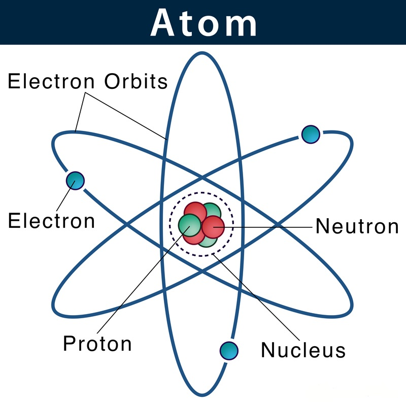
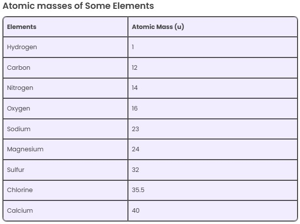

A molecule is a collection of two or more atoms that are securely bound together by attractive forces or by chemical bonds. The term “atom” refers to the tiniest unit of matter that can be separated. The term “valency” refers to an element's capacity for combination.
Atoms are much too small to be seen; hence experiments to find out their structure and behavior have to be conducted with large numbers of them. From the results of these experiments, we may attempt to construct a hypothetical model of an atom that behaves like the true atom.
Molecules consist of one or more atoms bound together by covalent (chemical) bonds. Atoms may be depicted by circle shapes, each of which has a nucleus at the center (containing protons and neutrons), surrounded by one or more concentric circles representing the 'shells' or 'levels' in which the electrons surrounding the nucleus of the atom are located and markings indicating the electron.at each level. A molecule is the smallest thing a substance can be divided into while remaining the same substance. It is made up of two or more atoms that are bound together by chemical bonding.

The smallest particle of an element, which may or may not have an independent existence but always takes place in a chemical reaction is called an atom. An atom is defined as the smallest unit that retains the properties of an element. An atom is composed of sub-atomic particles and these cannot be made or destroyed. All atoms of the same element are identical and different elements have different types of atoms. Chemical reactions occur when atoms are rearranged.
Atoms consist of three fundamental types of particles, protons, electrons and neutrons. Neutrons and protons have approximately the same mass and in contrast to this the mass of an electron is negligible. A proton carries a positive charge, a neutron has no charge and an electron is negatively charged. An atom contains equal numbers of protons and electrons and therefore overall an atom has no charge. The nucleus of an atom contains protons and neutrons only, and therefore is positively charged. The electrons occupy the region of space around the nucleus. Therefore, most of the mass is concentrated within the nucleus.
The center of the atom is called the nucleus. The nucleus contains neutrons and protons that give an atom its weight and positive charges. A neutron carries no charge and has a mass of one unit. A proton carries a single positive charge and also has a mass of one unit, The atomic number of an element is equal to the number of protons or positive charges in the nucleus. The atomic weight of an element is determined by combining the total number of protons and neutrons in the nucleus. An electron carries a single negative charge. If an atom of an element is to have zero charge, it must have the same number of electrons as protons. These electrons are arranged in orbits around the nucleus of the atom like the layers of an anion.
Summary
- A molecule is made up of two or more atoms that are chemically bound together by attractive forces or chemical bonds. Atoms are the smallest units of matter, capable of being separated but retaining the properties of the element. The valency of an element refers to its ability to combine with other elements.
- Atoms are too small to be seen, so experiments involving large numbers of atoms are necessary to understand their structure. A model of the atom can be constructed from these experiments. Atoms are depicted as having a nucleus, containing protons and neutrons, surrounded by concentric shells representing the orbits of electrons.
- Atoms are composed of three subatomic particles: protons, neutrons, and electrons. Protons and neutrons have similar mass, while electrons have negligible mass. A proton carries a positive charge, a neutron has no charge, and an electron carries a negative charge. The number of protons in an atom determines its atomic number, while the combined number of protons and neutrons determines its atomic weight.
- In a neutral atom, the number of protons equals the number of electrons, balancing the positive and negative charges. The protons and neutrons are located in the nucleus, while electrons orbit the nucleus in layers or shells. The nucleus is positively charged due to the protons, and most of the atom's mass is concentrated in the nucleus.
Practice Papers
1. What is a molecule, and how is it formed?
2. What does the term "valency" refer to in chemistry?
3. Why are atoms too small to be seen with the naked eye?
4. How are atoms represented in diagrams, and what does each part of the diagram represent?
5. What are the three fundamental subatomic particles of an atom, and what are their charges?
6. How does the mass of protons and neutrons compare to the mass of electrons?
7. Where are protons and neutrons located within an atom, and what charge does the nucleus have?
8. What is the significance of the atomic number of an element?
9. How is the atomic weight of an element determined?
10. Why must an atom have an equal number of protons and electrons to have zero charge?
It is the mass of an atom in a chemical element. It is roughly equivalent to the total neutrons and protons present in the atom. It is expressed in atomic mass units (denoted by u). 1amu is equal to the exactly one-twelfth of the mass of 1 atom of C-12 and the relative atomic masses of elements is determined with respect to-12 atom.
Salient features of Dalton's Atomic Theory
- The matter is composed of minute particles known as atoms.
- Atoms are indivisible particles that can't be destroyed or created through chemical reactions.
- All atoms of an element have identical chemical properties and mass whereas, atoms of different elements have different chemical properties and masses.
- Atoms combine in a ratio of small whole numbers to form compounds.
The matter is anything and everything in our surrounding. It has basic structural and fundamental units. Let us examine the concept of matter with an example. Taking a storybook into consideration and dividing its structure. The book contains many pages, each page consists of paragraphs, and each paragraph has many sentences. Atoms in simple terms are defined as the smallest unit of matter.
Each sentence will further have many words and each word will have characters. Therefore we have divided a storybook into characters. This is exactly the same case when we take the matter into account. The matter is made up of substances which contain molecules. The molecules, in turn, are made up of groups of atoms.
Summary
- Matter is made of atoms: Atoms are the basic building blocks of matter.
- Atoms are indivisible: Atoms cannot be created or destroyed in chemical reactions.
- Atoms of an element are identical: Atoms of the same element have the same mass and chemical properties, but atoms of different elements differ in mass and properties.
- Atoms combine in simple ratios: Atoms combine in small whole numbers to form compounds
Practice Questions
1. According to Dalton's Atomic Theory, what is the basic unit of matter?
2. What does Dalton’s theory say about the indivisibility of atoms?
3. How do atoms of the same element differ from atoms of different elements, according to Dalton’s theory?
4. How do atoms combine to form compounds, as described by Dalton?
5. How is the structure of matter similar to the structure of a storybook, as explained in the summary?